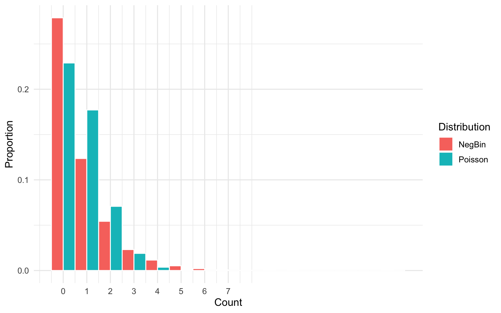

Core concepts, common distributions, and practical simulation examples
Author
Carlos Pineda-Antunez
Published
September 20, 2025
Abstract
This Quarto document reviews key probability concepts and the distributions most commonly used in Health Economics and Outcomes Research (HEOR). Through concise simulations and visualizations, we connect theory to typical HEOR tasks: event probabilities, counts of utilization, costs, time-to-event outcomes, utilities, and Bayesian updating.
How to use this document
Run all cells to generate simulated examples for each concept/distribution.
Replace simulated inputs with your data to see how distributional choices affect analysis.
Use figures and tables as templates for teaching, code review, or reports.
Attaching package: 'scales'
The following object is masked from 'package:purrr':
discard
The following object is masked from 'package:readr':
col_factor
library(MASS)
Attaching package: 'MASS'
The following object is masked from 'package:dplyr':
select
library(gridExtra)
Attaching package: 'gridExtra'
The following object is masked from 'package:dplyr':
combine
set.seed(2025)theme_set(theme_minimal(base_size =12))options(scipen =999)# Helper: simple Dirichlet RNG (no extra packages)rdirichlet <-function(n, alpha) { k <-length(alpha) x <-matrix(rexp(n * k, rate =1), nrow = n, ncol = k) # will be scaled by Gamma drawsfor (j in1:k) x[, j] <-rgamma(n, shape = alpha[j], rate =1) x /rowSums(x)}
Probability Basics
Key ideas
Events and probabilities: P(A), P(B), joint P(A ∩ B), conditional P(A | B) = P(A ∩ B) / P(B).
Independence: A and B are independent if P(A ∩ B) = P(A)P(B).
Law of large numbers (LLN): sample proportions and means converge to true probabilities/expectations as n increases.
Example (HEOR context)
A: Monthly cost > $10,000
B: At least one inpatient admission this month
We simulate cost and admissions for many member-months and estimate P(A), P(B), P(A ∩ B), P(A)P(B), P(A | B).
Warning: There was 1 warning in `mutate()`.
ℹ In argument: `across(contains("mean"), round, 2)`.
Caused by warning:
! The `...` argument of `across()` is deprecated as of dplyr 1.1.0.
Supply arguments directly to `.fns` through an anonymous function instead.
# Previously
across(a:b, mean, na.rm = TRUE)
# Now
across(a:b, \(x) mean(x, na.rm = TRUE))
gt(compare) %>%tab_header(title ="Empirical vs Theoretical Moments")
Empirical vs Theoretical Moments
variable
mean_empirical
variance_empirical
mean_theoretical
variance_theoretical
Cost (X)
4463.47
25899221.36
4469.36
24927160.2
Admits (Y)
0.70
0.69
0.70
0.7
Bernoulli and Binomial: Binary outcomes and counts of successes
Common HEOR uses
Readmission within 30 days (yes/no).
Medication adherence threshold (PDC ≥ 80%).
Number of responders in a sample.
# Bernoulli trials (readmission yes/no)p <-0.15n_pat <-2000readmit <-rbinom(n_pat, size =1, prob = p)# Binomial count within cohort of size m per sitem <-50n_sites <-1000responders_per_site <-rbinom(n_sites, size = m, prob = p)summary_tbl <-tibble(Quantity =c("Pr(readmit=1)", "Mean responders/site", "Var responders/site"),Estimate =c(mean(readmit), mean(responders_per_site), var(responders_per_site)),Theoretical =c(p, m*p, m*p*(1-p))) %>%mutate(across(c(Estimate, Theoretical), round, 3))gt(summary_tbl) %>%tab_header(title ="Bernoulli/Binomial: Empirical vs Theoretical")
Bernoulli/Binomial: Empirical vs Theoretical
Quantity
Estimate
Theoretical
Pr(readmit=1)
0.155
0.150
Mean responders/site
7.416
7.500
Var responders/site
6.205
6.375
k <-0:mpmf <-dbinom(k, size = m, prob = p)df <-tibble(k, pmf)mu <- m*psigma <-sqrt(m*p*(1-p))approx <-tibble(k, density =dnorm(k, mean = mu, sd = sigma))ggplot(df, aes(k, pmf)) +geom_col(fill ="steelblue", alpha =0.6) +geom_line(data = approx, aes(k, density), color ="tomato", linewidth =1) +labs(x ="Number of responders", y ="Probability")
Binomial PMF (m=50, p=0.15) with Normal approximation.
Poisson and Negative Binomial: Utilization counts and overdispersion
Common HEOR uses
Counts of inpatient admissions, ED visits, office visits.
Overdispersion (variance > mean) is common; Negative Binomial often fits better than Poisson.
n <-10000# Scenario A: Poisson (mean = variance)lambda <-0.8y_pois <-rpois(n, lambda)# Scenario B: Overdispersed counts (NegBin with mean mu and size k)mu <-0.8k_size <-1.0# smaller => more overdispersiony_nb <-rnbinom(n, size = k_size, mu = mu)summ <-tibble(scenario =c("Poisson", "NegBin"),mean =c(mean(y_pois), mean(y_nb)),variance =c(var(y_pois), var(y_nb)))gt(summ %>%mutate(across(c(mean, variance), round, 3))) %>%tab_header(title ="Mean-Variance Comparison: Poisson vs Negative Binomial")
Mean-Variance Comparison: Poisson vs Negative Binomial
scenario
mean
variance
Poisson
0.785
0.786
NegBin
0.795
1.436
dfp <-tibble(y = y_pois, dist ="Poisson")dfn <-tibble(y = y_nb, dist ="NegBin")df_all <-bind_rows(dfp, dfn)ggplot(df_all, aes(y, after_stat(count/sum(count)), fill = dist)) +geom_histogram(binwidth =1, position ="dodge", color ="white") +scale_x_continuous(breaks =0:7) +labs(x ="Count", y ="Proportion", fill ="Distribution")

Distribution of counts: Poisson vs Negative Binomial (overdispersed).
Fitting Poisson vs Negative Binomial regression to overdispersed data: